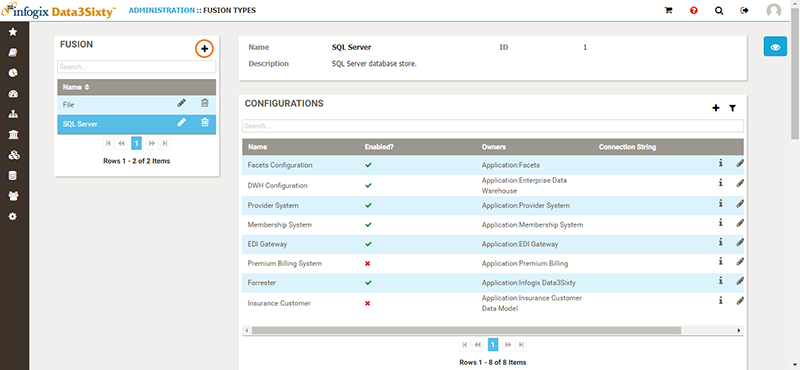
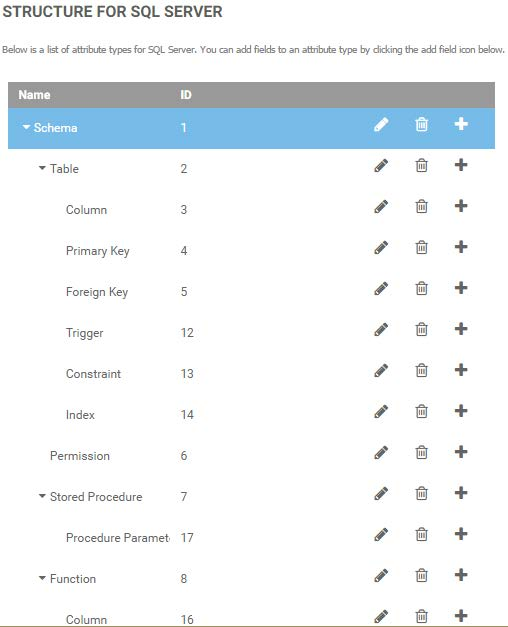

Open topic with navigation
Creating a custom Fusion type
You can create a custom fusion type to fit the metadata layout of your system.
- From the Administration menu on the left of the screen, select Fusion.
- Click the Add button in the top right corner of the Fusion panel:

- When you have entered all necessary information in the Add Fusion Type panel, click Save.
- Build a structure to represent the metadata of your new fusion type:
- In the Fusion panel, select your new fusion type.
- You can use an existing structure, or you can create a new structure by clicking the Add button in the top right corner of the Structure panel.
- Type a Name for the structural item, e.g. Table, Column, View.
- When you have finished entering information in the Structure panel, click Save.
- Optionally, you can add a new field to your structural type by selecting the structure then clicking the Add icon in the top right corner of the Fields panel.
- To add another structural type at the same level as the one you created in the previous step, follow the same steps. To create a child type, click the Add button on the row that will serve as the parent.
The following screenshot shows an example of a SQL Server structure:

Next topic: Creating a Fusion configuration